The Dagger is a light assault fighter.
Instructions (includes part list)
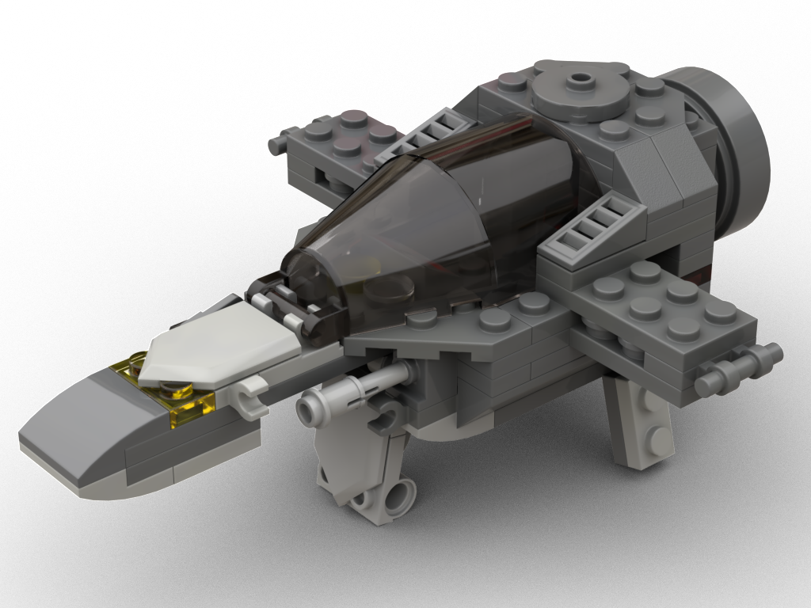 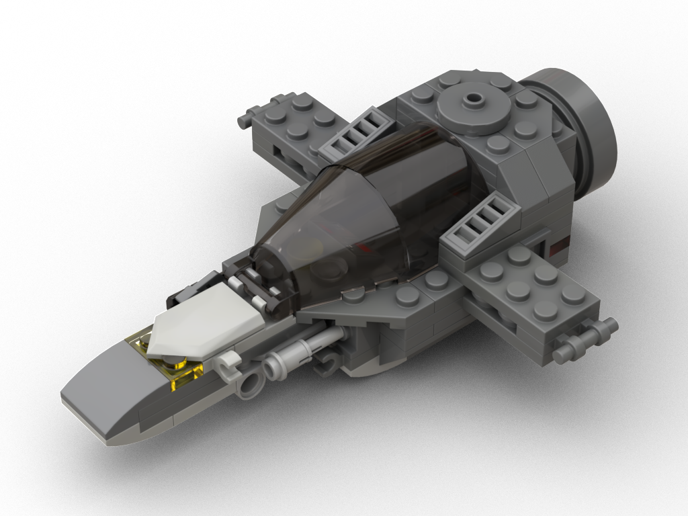 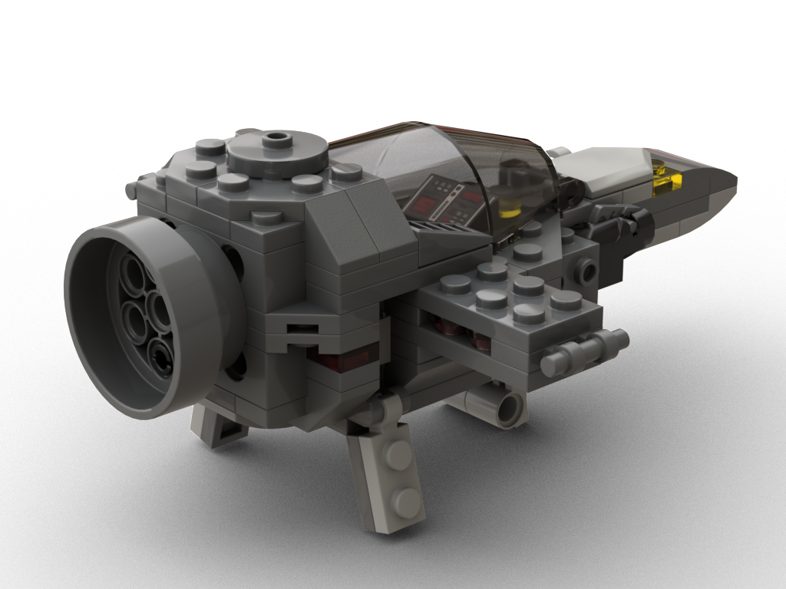 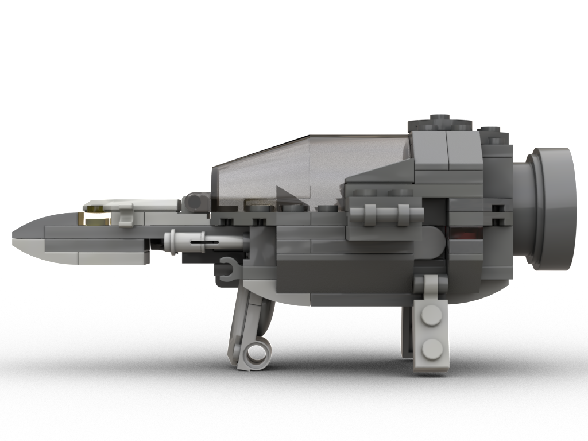 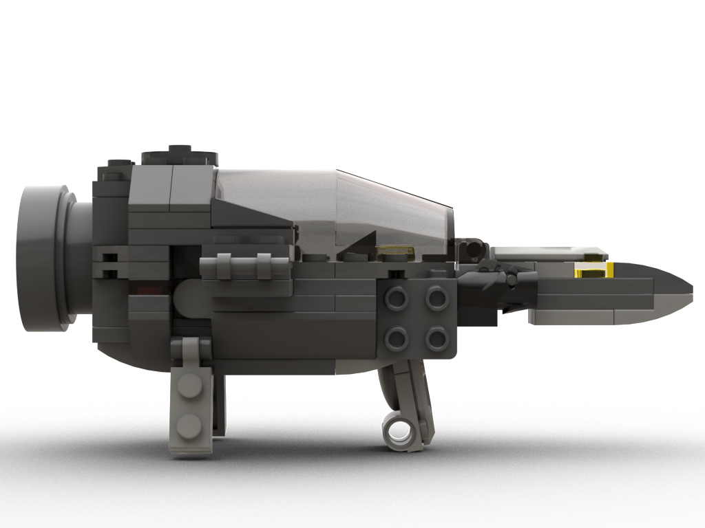 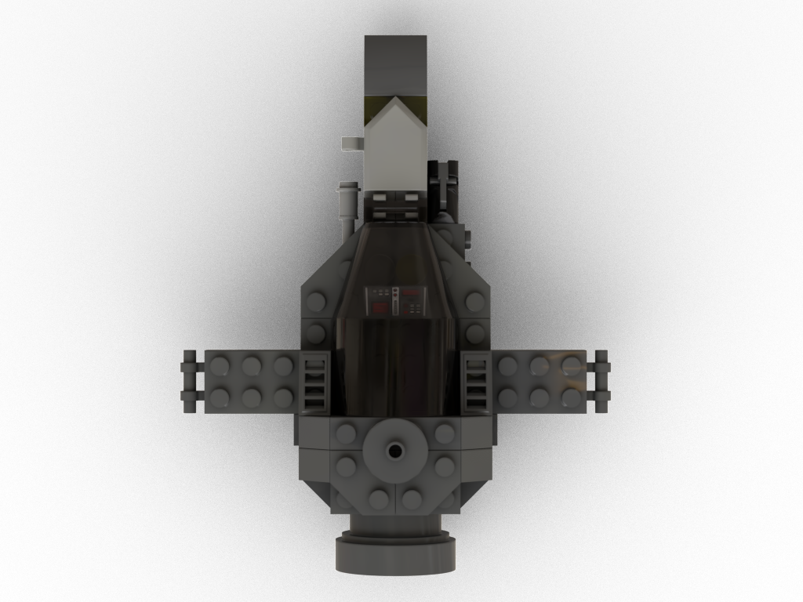
The cockpit needed lots of iteration to increase pilot space. In the first version, the rear pedestals were hinged higher, had another design element and could not be fully submerged in the hull. I needed to place them lower to connect the front to the rear part of the spaceship to greatly increase sturdiness.
While digitalizing the model, I ran into two opportunities to swap parts and improve stability/design, stretching the whole process.
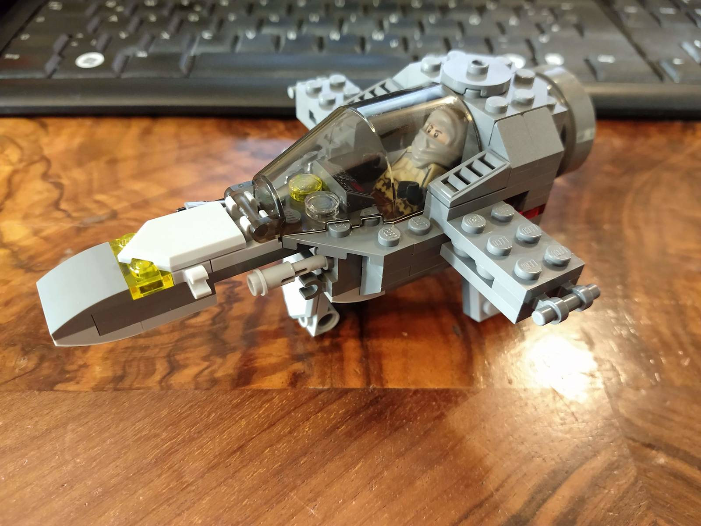 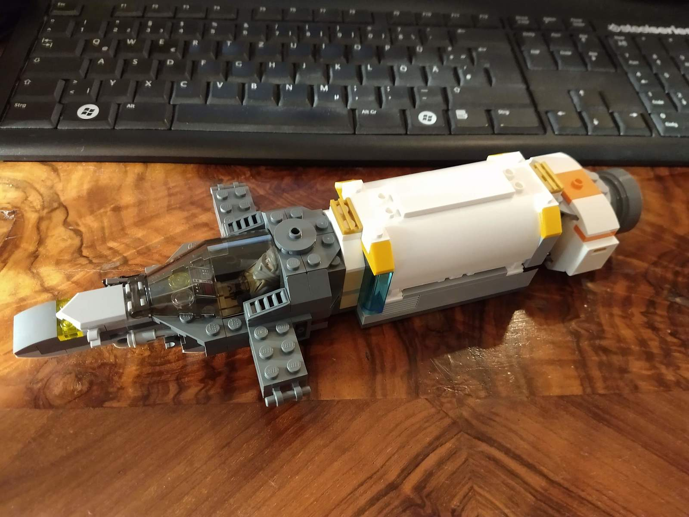 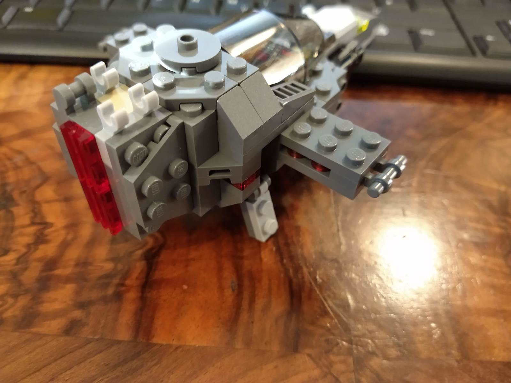 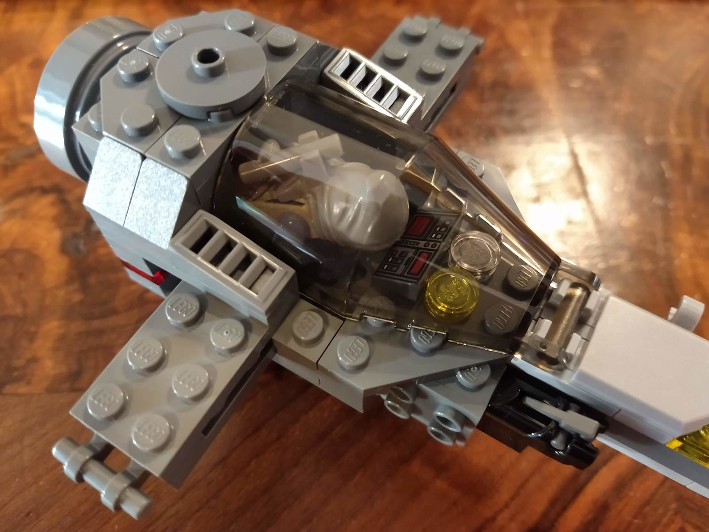 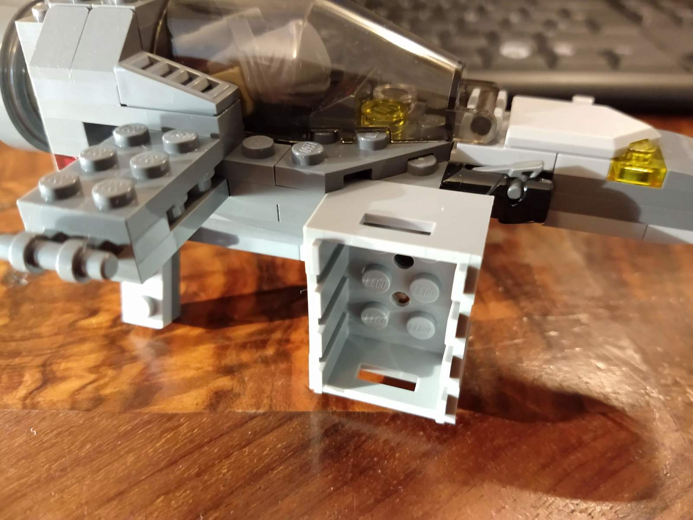